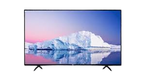

Television Details | |
|  | Television (TV), a form of mass media based on the electronic delivery of moving images and sound from a source to a receiver. By extending the senses of vision and hearing beyond the limits of physical distance, television has had a considerable influence on society. |